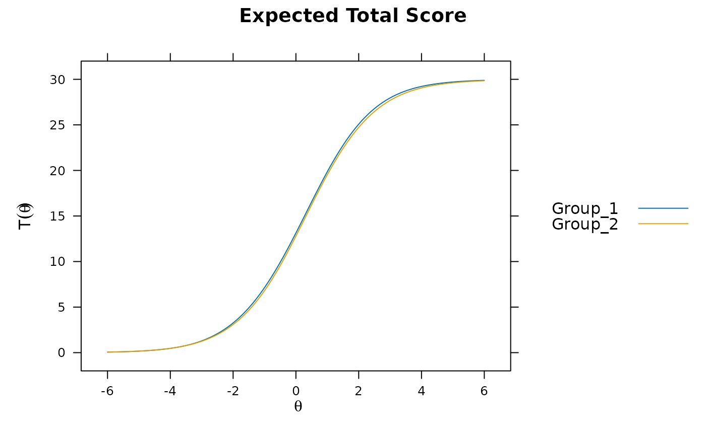
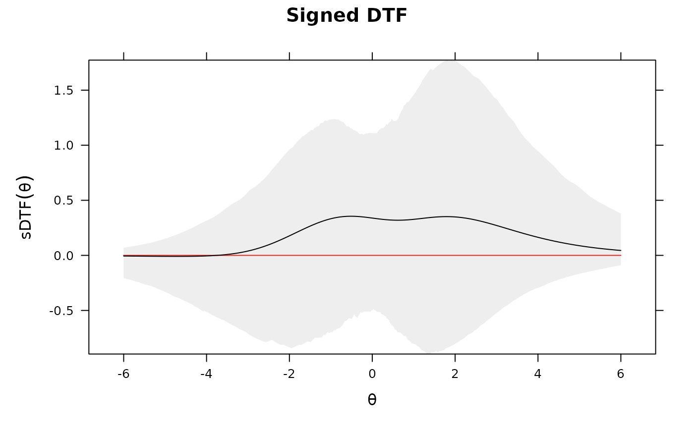
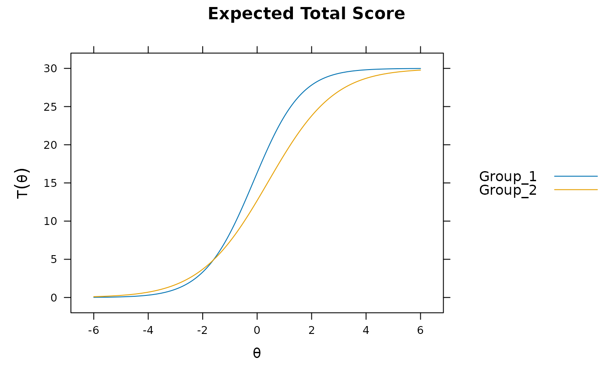
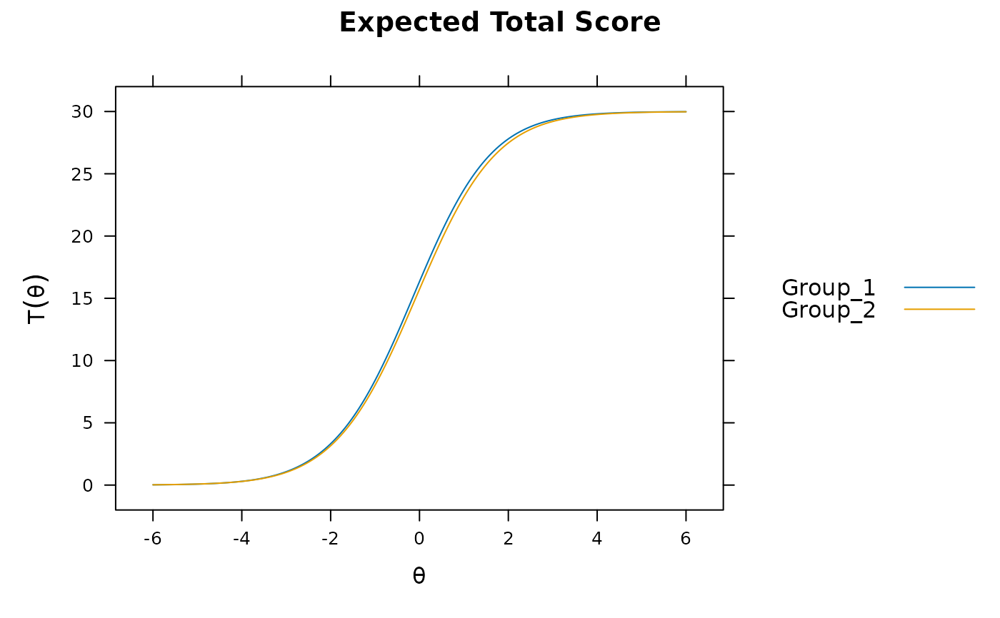
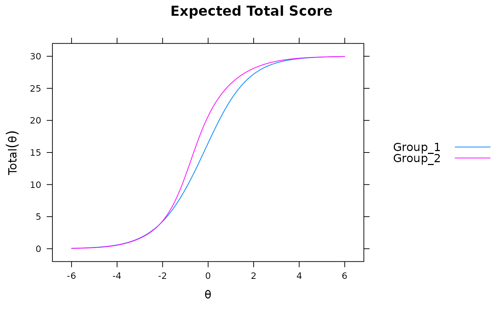
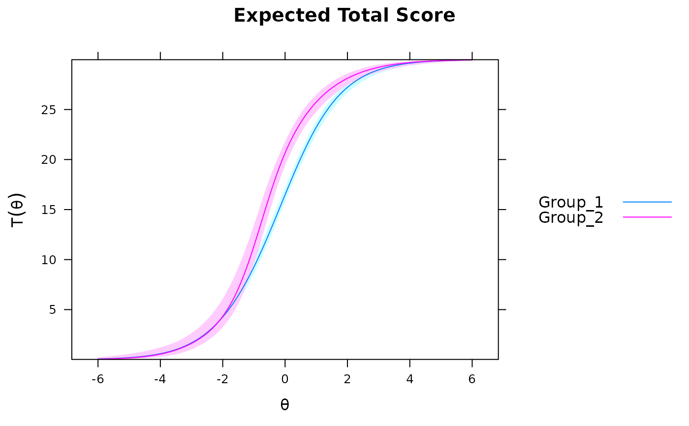
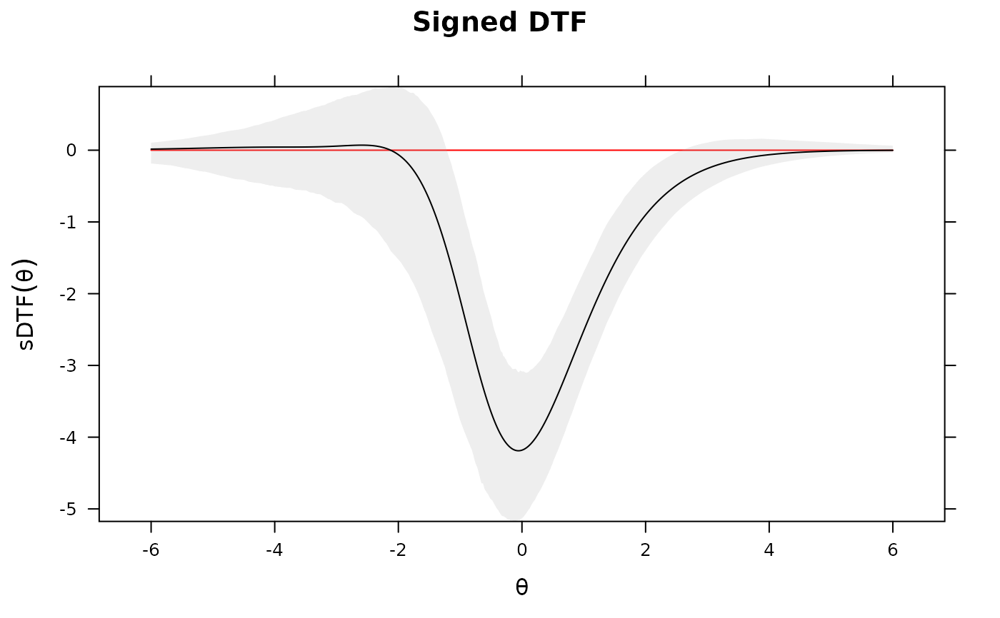

Function performs various omnibus differential test functioning procedures on an object
estimated with multipleGroup(). If the latent means/covariances are suspected to differ
then the input object should contain a set of 'anchor' items to ensure that only differential
test features are being detected rather than group differences. Returns signed (average area
above and below) and unsigned (total area) statistics, with descriptives such as the percent
average bias between group total scores for each statistic. If a grid of Theta values is passed,
these can be evaluated as well to determine specific DTF location effects. For best results,
the baseline model should contain a set of 'anchor' items and have freely estimated
hyper-parameters in the focal groups. See DIF for details.
a multipleGroup object which estimated only 2 groups
a number indicating how many draws to take to form a suitable multiple imputation estimate of the expected test scores (usually 100 or more). Returns a list containing the imputation distribution and null hypothesis test for the sDTF statistic
range of confidence interval when using draws input
number of points to use in the integration. Default is 1000
lower and upper limits of the latent trait (theta) to be evaluated, and is
used in conjunction with npts
an optional matrix of Theta values to be evaluated in the draws for the sDTF statistic. However, these values are not averaged across, and instead give the bootstrap confidence intervals at the respective Theta nodes. Useful when following up a large uDTF/sDTF statistic to determine where the difference between the test curves are large (while still accounting for sampling variability). Returns a matrix with observed variability
a character vector indicating which plot to draw. Possible values are 'none', 'func' for the test score functions, and 'sDTF' for the evaluated sDTF values across the integration grid. Each plot is drawn with imputed confidence envelopes
logical; automatically generate key in lattice plot?
additional arguments to be passed to lattice and boot
Chalmers, R., P. (2012). mirt: A Multidimensional Item Response Theory Package for the R Environment. Journal of Statistical Software, 48(6), 1-29. doi:10.18637/jss.v048.i06
Chalmers, R. P., Counsell, A., and Flora, D. B. (2016). It might not make a big DIF: Improved Differential Test Functioning statistics that account for sampling variability. Educational and Psychological Measurement, 76, 114-140. doi:10.1177/0013164415584576
# \donttest{
set.seed(1234)
n <- 30
N <- 500
# only first 5 items as anchors
model <- 'F = 1-30
CONSTRAINB = (1-5, a1), (1-5, d)'
a <- matrix(1, n)
d <- matrix(rnorm(n), n)
group <- c(rep('Group_1', N), rep('Group_2', N))
## -------------
# groups completely equal
dat1 <- simdata(a, d, N, itemtype = '2PL')
dat2 <- simdata(a, d, N, itemtype = '2PL')
dat <- rbind(dat1, dat2)
mod <- multipleGroup(dat, model, group=group, SE=TRUE,
invariance=c('free_means', 'free_var'))
plot(mod)

DTF(mod)
#> sDTF.score sDTF(%).score uDTF.score uDTF(%).score
#> 0.1744653 0.5815508 0.1771799 0.5905996
if(interactive()) mirtCluster()
DTF(mod, draws = 1000) #95% C.I. for sDTF containing 0. uDTF is very small
#> $observed
#> sDTF.score sDTF(%).score uDTF.score uDTF(%).score
#> 0.1744653 0.5815508 0.1771799 0.5905996
#>
#> $CIs
#> sDTF.score sDTF(%).score uDTF.score uDTF(%).score
#> CI_97.5 0.4731366 1.5771221 0.76490661 2.549689
#> CI_2.5 -0.1231879 -0.4106264 0.08076029 0.269201
#>
#> $tests
#> P(sDTF.score = 0)
#> 0.27176
#>
DTF(mod, draws = 1000, plot='sDTF') #sDTF 95% C.I.'s across Theta always include 0

## -------------
## random slopes and intercepts for 15 items, and latent mean difference
## (no systematic DTF should exist, but DIF will be present)
set.seed(1234)
dat1 <- simdata(a, d, N, itemtype = '2PL', mu=.50, sigma=matrix(1.5))
dat2 <- simdata(a + c(numeric(15), runif(n-15, -.2, .2)),
d + c(numeric(15), runif(n-15, -.5, .5)), N, itemtype = '2PL')
dat <- rbind(dat1, dat2)
mod1 <- multipleGroup(dat, 1, group=group)
plot(mod1) #does not account for group differences! Need anchors

mod2 <- multipleGroup(dat, model, group=group, SE=TRUE,
invariance=c('free_means', 'free_var'))
plot(mod2)

# significant DIF in multiple items....
# DIF(mod2, which.par=c('a1', 'd'), items2test=16:30)
DTF(mod2)
#> sDTF.score sDTF(%).score uDTF.score uDTF(%).score
#> 0.1945029 0.6483428 0.1951426 0.6504754
DTF(mod2, draws=1000) #non-sig DTF due to item cancellation
#> $observed
#> sDTF.score sDTF(%).score uDTF.score uDTF(%).score
#> 0.1945029 0.6483428 0.1951426 0.6504754
#>
#> $CIs
#> sDTF.score sDTF(%).score uDTF.score uDTF(%).score
#> CI_97.5 0.49555021 1.6518340 0.66764422 2.2254807
#> CI_2.5 -0.05928374 -0.1976125 0.08166898 0.2722299
#>
#> $tests
#> P(sDTF.score = 0)
#> 0.1676547
#>
## -------------
## systematic differing slopes and intercepts (clear DTF)
dat1 <- simdata(a, d, N, itemtype = '2PL', mu=.50, sigma=matrix(1.5))
dat2 <- simdata(a + c(numeric(15), rnorm(n-15, 1, .25)), d + c(numeric(15), rnorm(n-15, 1, .5)),
N, itemtype = '2PL')
dat <- rbind(dat1, dat2)
mod3 <- multipleGroup(dat, model, group=group, SE=TRUE,
invariance=c('free_means', 'free_var'))
plot(mod3) #visable DTF happening

# DIF(mod3, c('a1', 'd'), items2test=16:30)
DTF(mod3) #unsigned bias. Signed bias indicates group 2 scores generally higher on average
#> sDTF.score sDTF(%).score uDTF.score uDTF(%).score
#> -0.8315791 -2.7719302 1.0764043 3.5880143
DTF(mod3, draws=1000)
#> $observed
#> sDTF.score sDTF(%).score uDTF.score uDTF(%).score
#> -0.8315791 -2.7719302 1.0764043 3.5880143
#>
#> $CIs
#> sDTF.score sDTF(%).score uDTF.score uDTF(%).score
#> CI_97.5 -0.5501761 -1.833920 1.3842638 4.614213
#> CI_2.5 -1.1246968 -3.748989 0.7954638 2.651546
#>
#> $tests
#> P(sDTF.score = 0)
#> 2.751692e-08
#>
DTF(mod3, draws=1000, plot='func')

DTF(mod3, draws=1000, plot='sDTF') #multiple DTF areas along Theta

# evaluate specific values for sDTF
Theta_nodes <- matrix(seq(-6,6,length.out = 100))
sDTF <- DTF(mod3, Theta_nodes=Theta_nodes)
head(sDTF)
#> Theta sDTF
#> score.1 -6.000000 0.03153852
#> score.2 -5.878788 0.03604269
#> score.3 -5.757576 0.04118272
#> score.4 -5.636364 0.04704476
#> score.5 -5.515152 0.05372532
#> score.6 -5.393939 0.06133199
sDTF <- DTF(mod3, Theta_nodes=Theta_nodes, draws=100)
head(sDTF)
#> Theta sDTF CI_97.5 CI_2.5
#> score.1 -6.000000 0.03153852 0.1630005 -0.01733325
#> score.2 -5.878788 0.03604269 0.1785845 -0.01767016
#> score.3 -5.757576 0.04118272 0.1955758 -0.01790858
#> score.4 -5.636364 0.04704476 0.2140859 -0.01802858
#> score.5 -5.515152 0.05372532 0.2342327 -0.01800863
#> score.6 -5.393939 0.06133199 0.2561400 -0.01782611
# }